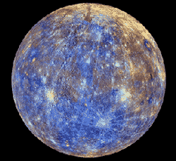

Mercurio
Mercurio es un planeta extraño y por su cercanía con el Sol, uno de los menos estudiados del sistema solar. Sin embargo, se trata de uno de los mundos cercanos que más fascinan a los astrónomos. En este artículo te contamos todo lo que deberías saber sobre el planeta Mercurio.
Con un tamaño tan solo un poco mayor al de nuestra luna, Mercurio es el más pequeño de los planetas del sistema solar y el más cercano al Sol. A pesar de su pequeño tamaño este planeta ya era conocido al menos desde la época de los Sumerios, hace 5.000 años. Posteriormente los griegos lo bautizaron como Hermes, en honor al mensajero de los dioses del olimpo, el cual más tarde fue conocido por los romanos como Mercurio, nombre con el que ha llegado hasta nuestros días.